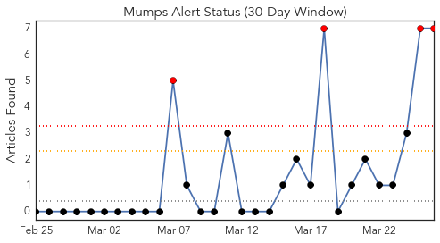
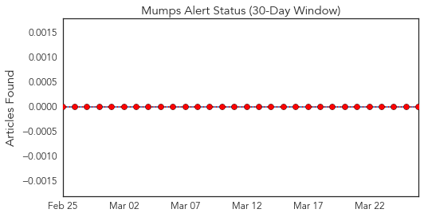
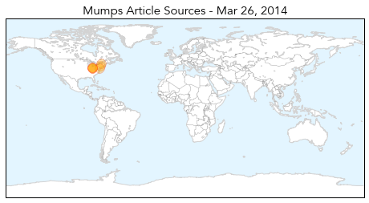
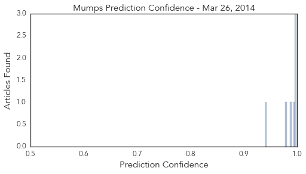

Toggle navigation
Early Warning
Daily Alerts
Mumps
Mar 26, 2014
Compare to:
-
Dengue Fever
Hemmorhagic Fever
Mold/Fungal Infection
Influenza
Meningitis
Pertussis / Whooping Cough
Middle East Respiratory Syndrome
Cholera
Hepatitis
Chikungunya
Yellow Fever
Bubonic Plague
West Nile Virus
Swine Flu
Ebola
Measles
Unknown
30 Day Trends
Web: 4
alerts
, 0
warnings
Twitter: 0
alerts
, 0
warnings
Top Articles:
0.998
Mumps Outbreak Moves Off Campus in Ohio
0.997
82 mumps cases reported in Franklin County
0.996
Mumps Outbreak Has Now Spread Outside Of Ohio State University Limits, With 69 Confirmed Cases
0.994
Ohio State University Reports Mumps Outbreak
0.988
Mumps Outbreak Spreads out of Ohio State University
0.978
Mumps may have spread; residents urged to take precautions
0.940
WFMJ.com News weather sports for Youngstown-Warren Ohio
Top Tweets:
No tweets found for Mar 26, 2014
Web/News Articles

Tweets

Article Locations

Article Confidences
